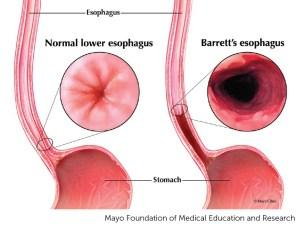

Barrett's Esophagus
Barrett's esophagus is a condition where the flat, pink lining of the esophagus becomes thicker and inflamed due to the damage done by acid reflux.
Barrett’s esophagus is a condition that can affect those with long-term GERD or acid reflux. Those who have GERD, may be recommended to get a screening for Barrett’s esophagus using an endoscopy and biopsy.